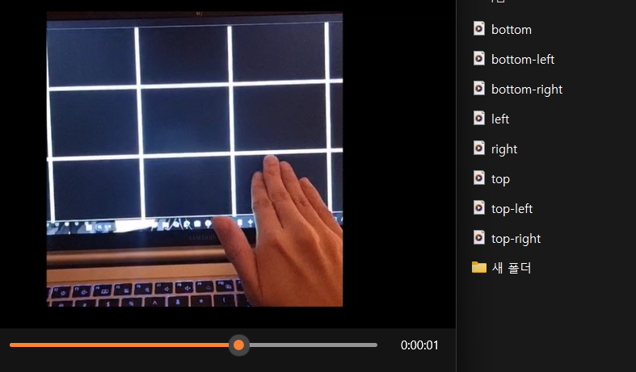
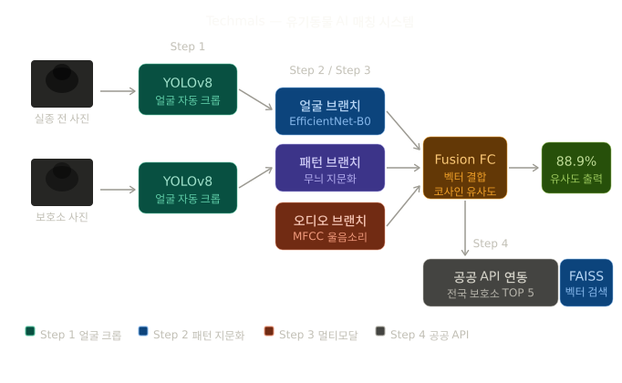

주가빈
중앙대학교 예술공학부 · 소프트웨어학부
인공지능과 멀티모달 기술에 관심을 가지고 공부하고 있는 학부생입니다. 현재 Vision-Language Models (VLMs), Video Understanding, Computer Vision을 중심으로 연구 경험을 쌓고 있습니다.

관심 분야
연구 경험
- Vision-Language Models (VLMs) 및 멀티모달 AI 관련 연구를 수행하고 있습니다.
- Video Understanding과 Video Hallucination을 중심으로 관련 논문을 분석하고 실험하고 있습니다.
- 최신 연구 동향을 조사하고 기존 방법론을 직접 구현하며 모델의 동작과 성능을 검증하는 경험을 쌓고 있습니다.
- VR 환경에서 사용자의 동작을 인식하는 행동인식 연구를 수행했습니다.
- VideoPrism과 TimeSformer를 활용하고 Soft-DTW Loss를 적용하여 시간적 동작 정보를 효과적으로 학습하는 방법을 실험했습니다.
- JAX 기반 VideoPrism과 PyTorch 기반 TimeSformer를 연동하기 위한 변환 과정을 직접 구현했습니다.
- Google TPU Research Cloud 및 GPU 환경에서 대규모 실험을 수행했습니다.
프로젝트

VR 리듬게임 인터페이스를 위한 딥러닝 기반 행동인식
VR 리듬게임 환경에서 사용자의 동작을 인식하기 위한 딥러닝 기반 행동인식 연구입니다. VideoPrism과 TimeSformer에 Soft-DTW Loss를 적용하여 동작의 시간적 특성을 반영하는 방법을 실험했습니다.
다양한 Loss 조합을 비교하고 대규모 영상 데이터셋을 활용하여 모델 성능을 검증했습니다. Google TPU Research Cloud 및 NVIDIA GPU 환경에서 실험을 수행했습니다.
GitHub →
AI 기반 유기동물 개체 식별 및 매칭 시스템
유기동물의 사진과 음성 정보를 활용하여 보호소 및 실종동물 데이터와 유사한 개체를 검색하는 AI 기반 매칭 시스템을 개발하고 있습니다.
EfficientNet과 Deep Metric Learning을 기반으로 동물의 특징을 임베딩하고, Triplet Loss를 활용하여 개체 간 유사도를 학습했습니다. 이후 FAISS 벡터 검색을 활용하여 유사한 동물을 빠르게 검색할 수 있도록 구성했습니다.
GitHub →